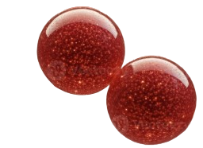

The premium morphological analysis framework. Integrated particle characterization, fractal dimensions, and high-precision curvature mapping.
Advanced tools for the modern material scientist.
A unified research dashboard that streamlines the entire analysis pipeline from acquisition to reporting.
Interactive statistical distribution analysis. Link geometric data directly to visual particle context.
Calculate Area, Perimeter, Circularity, and local Curvature with sub-pixel accuracy.
Built-in Minkowski-Bouligand calculations for quantifying complex, irregular particle morphologies.
MorphoVision-MVS is built upon the robust ImageJ framework, extending it with specialized algorithms designed specifically for microparticle characterization. Our system minimizes human error and maximizes reproducibility in high-stakes research environments.